ICML 2026
On the Collapse of Generative Paths: A Criterion and Correction for Diffusion Steering
1SNU Biomedical Sciences 2KAIST AI 3OGQ 4SNU IPAI 5Calici 6AITRICS 7SNU Transdisciplinary Innovations
*Equal contribution · †Corresponding author

Abstract
TL;DR ACE diagnoses and corrects Marginal Path Collapse, a failure mode in multi-constraint ratio-of-densities steering. It supports plug-and-play steering for molecules and images without retraining.
Inference-time steering adapts pretrained diffusion and flow models to new tasks without retraining, often using ratio-of-densities constructions that reweight time-indexed marginals with fixed exponents. We identify Marginal Path Collapse, a failure mode in which the intermediate density defined by such compositions becomes non-normalizable despite valid endpoints. This collapse can arise when composing heterogeneous experts trained with mismatched noise schedules, negative exponents, or partial supports.
To address this, we provide a sharp sufficient Path Existence Criterion that certifies well-defined composed intermediate densities when \(C(t)>0\) and detects collapse when \(C(t)<0\), together with Adaptive Path Correction with Exponents (ACE). ACE generalizes Feynman–Kac steering to time-varying exponents and dynamically adjusts expert weights to keep the path valid. On flexible-pose scaffold decoration and compositional image generation, ACE prevents collapse and improves sample reliability over constant-exponent baselines.
What Problems Does ACE Solve?
ACE targets modular generation problems where a sample must satisfy several constraints at once. A simple template is a joint object \(X,Y\) with a local condition \(A\) on \(X\) and a joint condition \(B\) on \((X,Y)\). Under the conditional-independence structure used in the paper, Bayes' rule gives a ratio-of-densities target:
This decomposition lets us combine pretrained experts instead of retraining a monolithic model. ACE solves the missing piece: making the entire intermediate generative path valid when these experts have different schedules, supports, or exponent signs.
Synthetic Checker
Two coordinates \(X,Y\) are generated from heterogeneous marginal and joint experts.
This controlled setting exposes Marginal Path Collapse and tests the Path Existence Criterion.
Flexible-Pose Scaffold Decoration
Let \(X=M^{sc}\) be the scaffold and \(Y=M^R\) the R-groups. Topology acts locally, while protein-pocket binding acts globally.
ACE composes CONF, SBDD, and DN experts while repairing schedule-induced collapse.
Multi-Instance Image Generation
Region prompts \(c_i\) constrain local foregrounds \(F_i\), while a global prompt \(C\) constrains the full image.
Here the path is homogeneous and valid, but ACE still improves concentration and prompt alignment.
Understanding ACE
Start with the checkerboard experiment, where both runs aim for the same target. In the animation, follow the samples from \(p_0\) toward \(p_1\) and watch when the two paths begin to diverge.
Synthetic Checker Animation
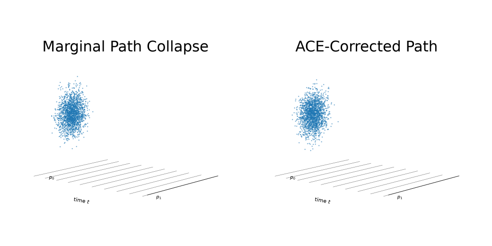
Figure 1 connects that divergence to the sign of the Path Existence Criterion. Figure 2 shows how the intermediate density can become non-normalizable even when the endpoints are valid. Figure 3 shows how changing the exponent schedule keeps the criterion positive across different combinations of noise schedules.
Marginal Path Collapse & ACE Correction

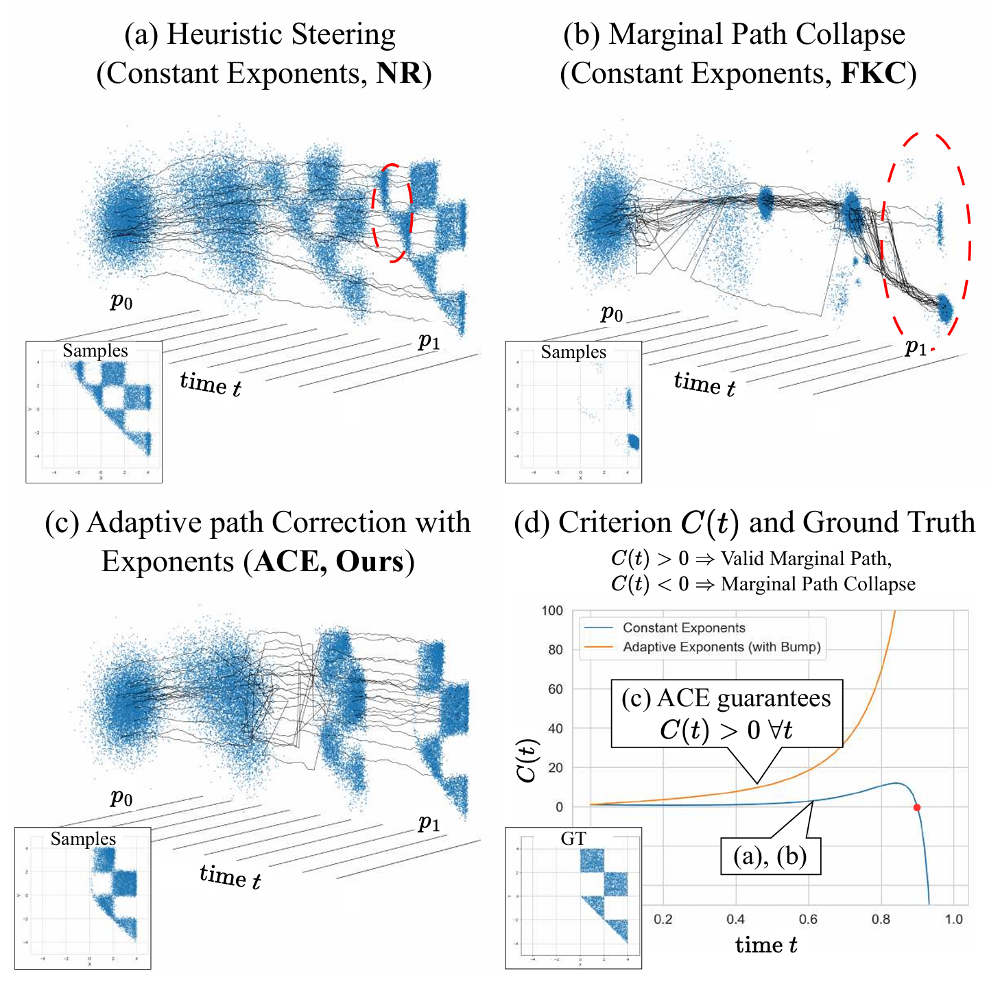
Understanding Path Collapse

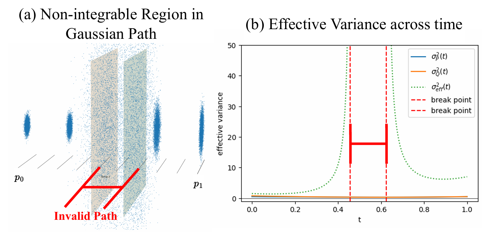
Schedule Mismatch and Criterion Repair

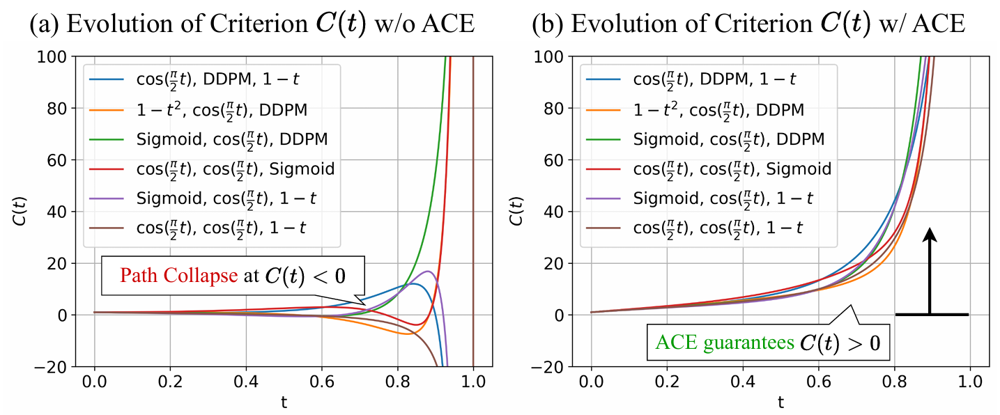
Key Contributions
Diagnosis: Path Existence Criterion
We derive an easy-to-compute criterion that certifies path existence when \(C_k(t)>0\) and detects collapse when \(C_k(t)<0\), using only schedules and exponents.
Positive criterion certifies a valid path; negative criterion detects collapse.
Solution: ACE Framework
Building on this diagnosis, ACE extends Feynman–Kac steering to support time-varying exponents, dynamically adjusting expert weights throughout generation while preserving the final target distribution.
Endpoint-preserving "bump" correction \(b_i(t)\) keeps the path-existence criterion positive (\(b_i(0)=b_i(t_{\mathrm{end}})=0\)). In the paper, we prove such corrections can always be constructed and empirically instantiate them with linear and quadratic bump components, selecting \(B_1,B_2\) to satisfy the criterion during sampling.
Key Insight: Marginal Path Collapse occurs when numerator and denominator experts shrink at incompatible rates, creating an intermediate imbalance where the combined density grows rather than decays at infinity. ACE repairs this by modifying the intermediate exponent path without changing the endpoint target.
Applications of ACE
The two applications test different aspects of ACE. Scaffold decoration asks whether ACE can repair collapse caused by mismatched expert schedules. Compositional image generation asks whether adjusting the exponents can improve prompt alignment when the path is already valid.
Flexible-Pose Scaffold Decoration

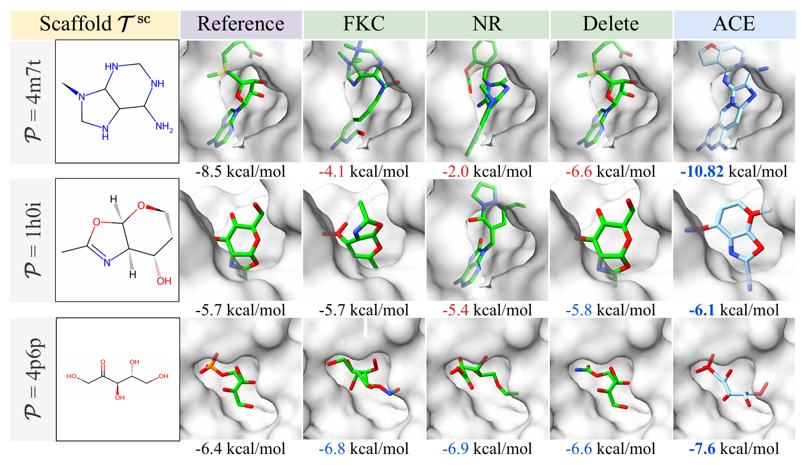
Impact of Path Collapse on Molecules

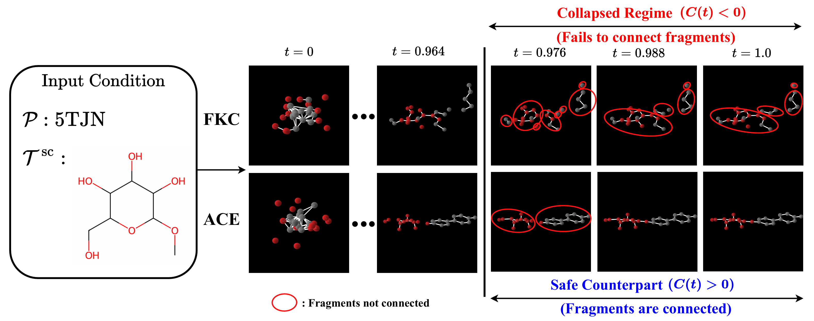
The left image uses the global prompt alone. The right adds region-wise guidance with ACE. Start with the two-chair example and check which color each chair receives, then compare object placement and attributes across the remaining prompts.
Compositional Image Generation

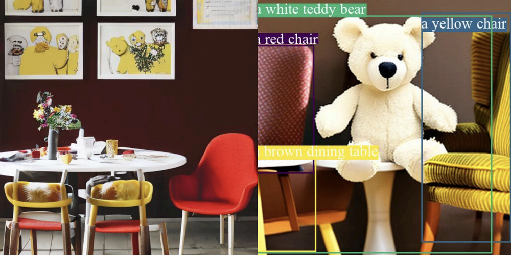

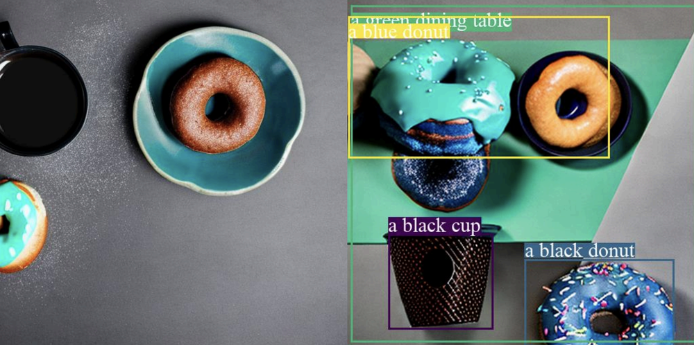

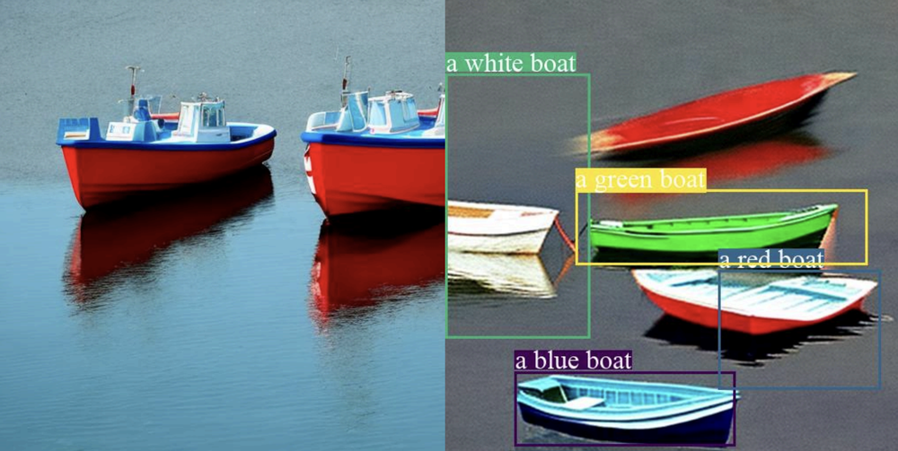

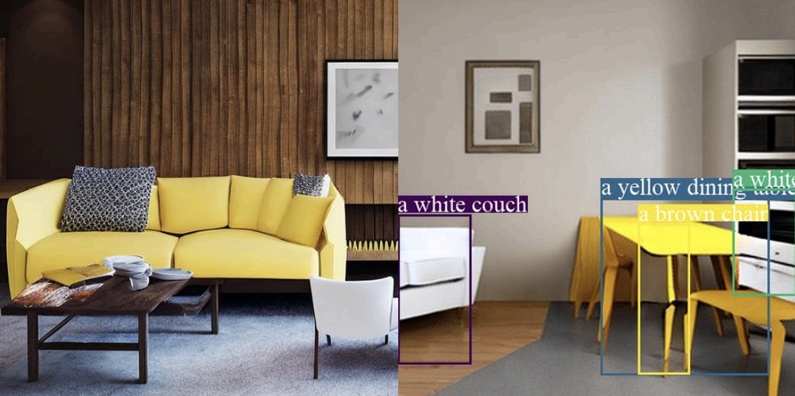


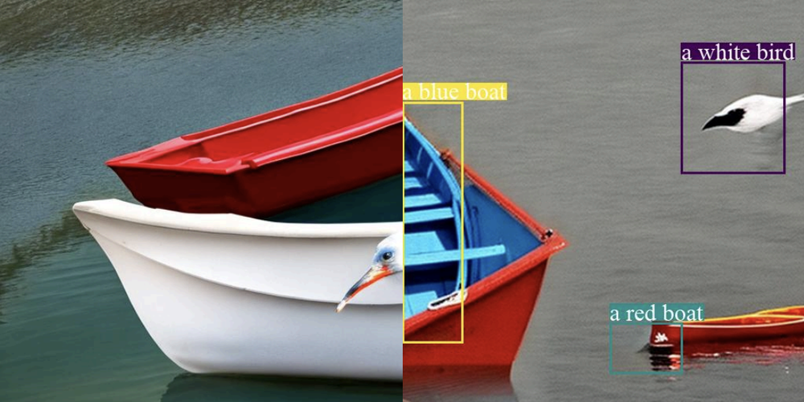


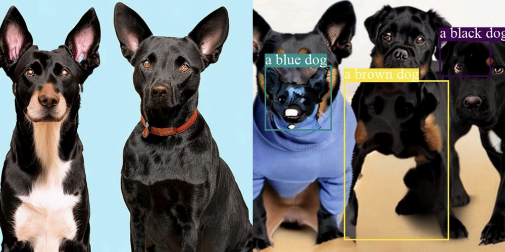

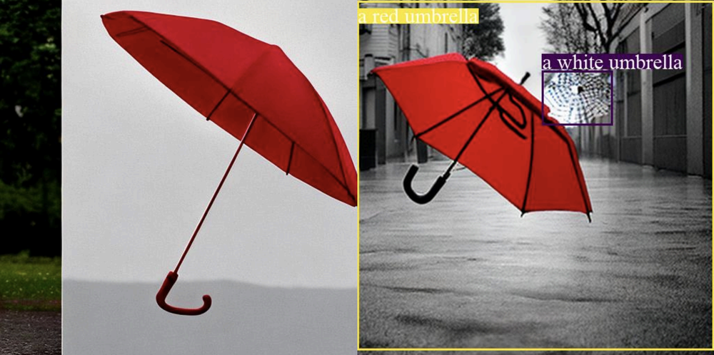

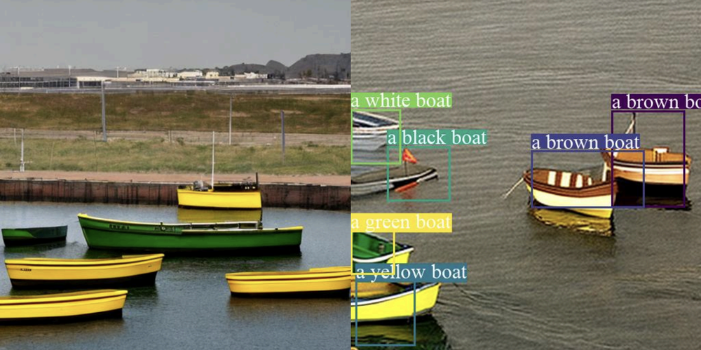
Figure E.18: Qualitative results of compositional image generation with ACE. Compared to the base Stable Diffusion 2.1 model (left), simulating the same model with ACE (right) yields better prompt alignment and layout guidance without additional training or external models. Table E.16 quantifies the improvement on COCO-MIG.
Method Comparison
| Methodology | Primary goal | Handles heterogeneity? | Handles time-varying or negative exponents? | Guarantees path existence? |
|---|---|---|---|---|
| Heuristic Guidance (e.g., CFG) | Improve sample quality | Heuristically | Heuristically | No |
| Feynman–Kac Correctors (FKC) | Provide unbiased samples | No | No | No |
| Our Work (Criterion + ACE) | Guarantee a valid, stable path | Yes | Yes | Yes |
ACE provides an explicit criterion and adaptive correction for path validity under heterogeneous conditions.
Quantitative Results
Table 3 shows how path validity and docking scores vary with guidance weight. Table 4 compares against fixed-pose baselines, and Table 5 shows the runtime trade-off between ACE and ACE-lite. For image generation, use Table E.16 to compare attribute success as the number of region prompts increases.
Scroll within wide tables to see all metrics. Method names stay visible as you scroll.
| Method | ω | PEC | OSR ↑ | Vina Score ↓ | QED ↑ | SA ↑ | Lipinski ↑ | |||||||||
|---|---|---|---|---|---|---|---|---|---|---|---|---|---|---|---|---|
| Pocket-Worst | Top 25% | Avg | Std | Top 25% | Top 50% | Avg | Top 25% | Top 50% | Avg | Top 25% | Top 50% | Avg | ||||
| Ref. | — | — | — | — | −8.0 | −6.77 | 1.89 | 0.62 | 0.47 | 0.48 | 0.73 | 0.66 | 0.67 | 1.0 | 1.0 | 0.95 |
| ACE | 1.1 | Yes | 0.71 | −6.74 | −8.30 | −7.02 | 0.19 | 0.65 | 0.50 | 0.51 | 0.69 | 0.56 | 0.57 | 1.00 | 1.00 | 0.99 |
| 1.2 | Yes | 0.65 | −6.78 | −8.40 | −7.08 | 0.20 | 0.63 | 0.49 | 0.51 | 0.65 | 0.55 | 0.55 | 1.00 | 1.00 | 0.98 | |
| 1.3 | Yes | 0.68 | −6.64 | −8.20 | −6.91 | 0.19 | 0.62 | 0.49 | 0.50 | 0.67 | 0.58 | 0.57 | 1.00 | 1.00 | 0.97 | |
| 1.4 | Yes | 0.75 | −6.84 | −8.70 | −7.10 | 0.19 | 0.64 | 0.54 | 0.53 | 0.65 | 0.57 | 0.56 | 1.00 | 1.00 | 0.98 | |
| FKC | 1.1 | No | 0.52 | −5.99 | −7.90 | −6.54 | 0.37 | 0.62 | 0.45 | 0.47 | 0.68 | 0.55 | 0.57 | 1.00 | 1.00 | 0.98 |
| 1.2 | No | 0.43 | −5.56 | −7.40 | −6.21 | 0.45 | 0.61 | 0.47 | 0.47 | 0.64 | 0.54 | 0.55 | 1.00 | 1.00 | 0.97 | |
| 1.3 | No | 0.49 | −5.90 | −7.90 | −6.45 | 0.40 | 0.54 | 0.42 | 0.41 | 0.67 | 0.56 | 0.57 | 1.00 | 1.00 | 0.97 | |
| 1.4 | No | 0.40 | −5.53 | −7.50 | −6.24 | 0.46 | 0.56 | 0.46 | 0.44 | 0.65 | 0.55 | 0.56 | 1.00 | 1.00 | 0.98 | |
| NR | 1.1 | No | 0.46 | −4.98 | −7.70 | −6.32 | 0.82 | 0.54 | 0.42 | 0.42 | 0.62 | 0.52 | 0.53 | 1.00 | 1.00 | 0.97 |
| 1.2 | No | 0.46 | −5.13 | −7.60 | −6.33 | 0.77 | 0.52 | 0.42 | 0.41 | 0.64 | 0.54 | 0.54 | 1.00 | 1.00 | 0.96 | |
| 1.3 | No | 0.42 | −5.19 | −7.50 | −6.23 | 0.73 | 0.56 | 0.45 | 0.44 | 0.62 | 0.54 | 0.54 | 1.00 | 1.00 | 0.98 | |
| 1.4 | No | 0.47 | −5.10 | −7.70 | −6.35 | 0.82 | 0.54 | 0.39 | 0.40 | 0.64 | 0.55 | 0.54 | 1.00 | 1.00 | 0.97 | |
Higher OSR and drug-likeness scores are preferred. Lower, more negative Vina scores are preferred. ACE satisfies the Path Existence Criterion (PEC) across all tested guidance weights. Bold and underlined values indicate the best and second-best marked results.
| Method | ω | OSR ↑ | Vina Score ↓ | QED ↑ | SA ↑ | Lipinski ↑ | |||||||||
|---|---|---|---|---|---|---|---|---|---|---|---|---|---|---|---|
| Pocket-Worst | Top 25% | Avg | Std | Top 25% | Top 50% | Avg | Top 25% | Top 50% | Avg | Top 25% | Top 50% | Avg | |||
| Reference | — | — | — | −8.0 | −6.77 | 1.89 | 0.62 | 0.47 | 0.48 | 0.73 | 0.66 | 0.67 | 1.0 | 1.0 | 0.95 |
| AutoFragDiff* | — | 0.36 | −5.14 | −7.60 | −6.01 | 0.61 | 0.70 | 0.59 | 0.57 | 0.80 | 0.70 | 0.71 | 1.00 | 1.00 | 0.97 |
| Delete* | — | 0.47 | −3.78 | −8.30 | −5.07 | 1.26 | 0.71 | 0.55 | 0.55 | 0.75 | 0.65 | 0.66 | 1.00 | 1.00 | 0.98 |
| ACE | 1.1 | 0.71 | −6.74 | −8.30 | −7.02 | 0.19 | 0.65 | 0.50 | 0.51 | 0.69 | 0.56 | 0.57 | 1.00 | 1.00 | 0.99 |
| 1.4 | 0.75 | −6.84 | −8.70 | −7.10 | 0.19 | 0.64 | 0.54 | 0.53 | 0.65 | 0.57 | 0.56 | 1.00 | 1.00 | 0.98 | |
| ACE-lite | 1.1 | 0.67 | −6.42 | −8.30 | −6.99 | 0.42 | 0.61 | 0.48 | 0.50 | 0.67 | 0.55 | 0.55 | 1.00 | 1.00 | 0.98 |
| 1.4 | 0.66 | −6.30 | −8.50 | −7.00 | 0.52 | 0.62 | 0.50 | 0.50 | 0.66 | 0.55 | 0.56 | 1.00 | 1.00 | 0.97 | |
Asterisks indicate methods that require a reference ligand pose. Higher OSR and drug-likeness scores are preferred. Lower, more negative Vina scores are preferred. Bold and underlined values indicate the best and second-best marked results.
| Method | VRAM (GB) | Time (min/molecule) |
|---|---|---|
| ACE | 1.57 | 0.34 |
| ACE-lite | 1.54 | 0.19 |
| AutoFragDiff | 2.13 | 0.29 |
| Delete | 1.46 | 0.31 |
| FKC | 1.53 | 0.19 |
| NR | 1.54 | 0.19 |
ACE-lite reduces runtime from 0.34 to 0.19 min/molecule while maintaining performance.
| Method | Backbone | L2 | L3 | L4 | L5 | L6 | Avg | CLIP ↑ | Local CLIP ↑ |
|---|---|---|---|---|---|---|---|---|---|
| Base Diffusion Model with global prompt | |||||||||
| SD1.5 | SD1.5 | 5.59 (18.83) | 4.79 (17.43) | 2.83 (14.95) | 2.41 (13.93) | 2.21 (15.94) | 3.11 (15.75) | 24.64 | 18.36 |
| SDXL | SDXL | 5.59 (19.78) | 4.48 (18.54) | 2.81 (16.67) | 2.14 (15.72) | 2.80 (18.42) | 3.17 (17.55) | 25.71 | 18.63 |
| SD3.5-M | SD3.5-M | 8.05 (21.57) | 8.46 (21.37) | 6.07 (18.98) | 5.02 (17.39) | 4.40 (17.80) | 5.86 (18.85) | 26.41 | 18.77 |
| Flux.1-dev | Flux.1-dev | 8.83 (22.00) | 7.50 (20.93) | 4.86 (17.75) | 4.53 (16.77) | 3.22 (16.49) | 5.08 (18.03) | 26.17 | 18.56 |
| Inference-time Control using only the base Diffusion Model | |||||||||
| NR | SD1.5 | 24.61 (30.50) | 24.19 (29.81) | 19.36 (25.64) | 17.67 (24.42) | 19.54 (25.91) | 20.24 (26.53) | 24.96 | 20.21 |
| FKC | SD1.5 | 33.02 (34.43) | 31.18 (33.34) | 28.80 (31.53) | 25.46 (29.63) | 22.88 (28.61) | 28.27 (31.51) | 25.44 | 20.66 |
| ACE | SD1.5 | 45.31 (41.48) | 42.50 (40.60) | 36.25 (35.20) | 32.75 (32.66) | 32.40 (33.40) | 37.84 (36.67) | 25.59 | 21.18 |
| NR | SD2.1 | 26.52 (31.18) | 25.76 (30.50) | 20.94 (27.24) | 18.83 (24.77) | 18.78 (25.31) | 21.04 (26.93) | 24.89 | 19.96 |
| FKC | SD2.1 | 39.69 (37.78) | 34.93 (35.91) | 31.98 (33.95) | 28.42 (32.07) | 24.93 (30.02) | 31.99 (33.95) | 25.27 | 20.64 |
| ACE | SD2.1 | 46.25 (42.24) | 41.04 (39.45) | 41.72 (37.96) | 38.38 (37.17) | 34.90 (34.82) | 40.46 (38.33) | 24.94 | 21.09 |
| Adapter rendering methods (requires additional training on new data or external models) | |||||||||
| GLIGEN | SD1.4 | 38.36 (33.96) | 32.79 (29.58) | 28.67 (25.95) | 25.02 (23.88) | 26.98 (24.93) | 28.84 (26.47) | 24.91 | 20.78 |
| InstanceDiffusion | SD1.5 | 68.24 (62.67) | 60.47 (55.75) | 59.88 (54.15) | 53.92 (49.02) | 57.14 (51.34) | 58.49 (53.12) | 25.97 | 21.90 |
| MIGC | SD1.4 | 66.37 (57.02) | 63.10 (54.47) | 61.27 (52.48) | 57.25 (49.49) | 59.13 (51.38) | 60.41 (52.16) | 25.39 | 21.42 |
| 3DIS | SD1.5 | 58.09 (52.76) | 51.48 (46.92) | 46.15 (42.46) | 40.39 (38.16) | 41.22 (38.47) | 45.23 (41.89) | 24.02 | 21.24 |
Instance attribute success ratio (%) with mIoU (%) in parentheses. L2–L6 denote tasks with 2 to 6 region-wise guidance conditions. CLIP uses the full image and prompt. Local CLIP uses the local crops and their prompts. Both ACE rows use B1 = 5 and B2 = 0.
BibTeX
@inproceedings{
lee2026collapse,
title={On the Collapse of Generative Paths: A Criterion and Correction for Diffusion Steering},
author={Ziseok Lee and Minyeong Hwang and Wooyeol Lee and Sanghyun Jo and Jihyung Ko and Young Bin Park and Jae-Mun Choi and Eunho Yang and Kyungsu Kim},
booktitle={Proceedings of the 43rd International Conference on Machine Learning},
year={2026},
url={https://openreview.net/forum?id=emv2qsi3TG}
}